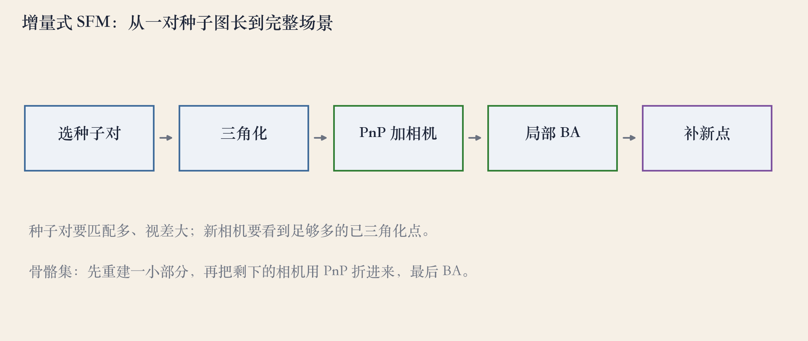
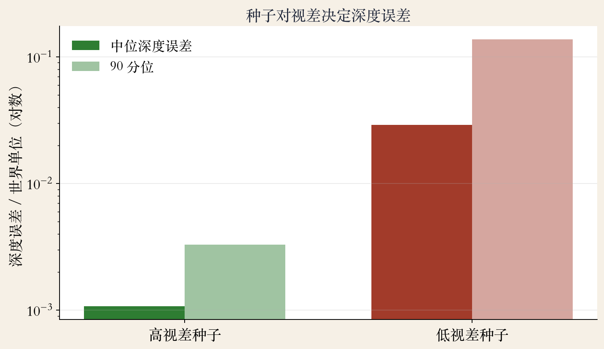
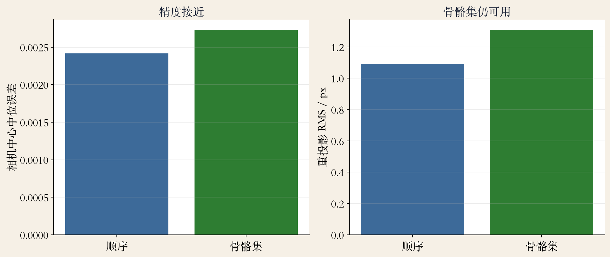

从种子图开始
增量式 SFM：一台台加相机
- 先在两两图像间建立稀疏对应。
- 把对应串成特征轨迹。
- 二维特征和全局三维点关联。
- 输出相机位姿和稀疏点云。
依据：原书第 725 页
输入与输出
输入：照片集
输出：相机位姿 + 稀疏点云
稠密表面交给 MVS
起步
种子对：匹配多，视差也要大
- 所有图像两两比较是 O(N²)。
- 先用图像检索缩小候选对。
- 一致匹配多，降低错配概率。
- 离面视差够，深度才可解。
依据：原书第 725–726 页
两个条件
纯旋转：没有视差
基线太短：深度误差放大
单应残差可当视差代理
增量循环
生长循环：五步加一台相机
- 选下一台能看到已有点的相机。
- 用 PnP 估它的位姿。
- 按重投影误差筛内点。
- 三角化新点，再跑局部 BA。
依据：原书第 726 页；本集实验

增量式 SFM 五步：种子对→三角化→PnP 加相机→局部 BA→补新点｜程序生成，未用教材或论文原图
顺序与合并
顺序影响成败，失败就回退
- 先加与当前模型重叠最多的相机。
- 重叠太少，PnP 点不够，注册失败。
- 按共视点数和匹配质量排序。
- 另一条路：三张图三元组再合并。
依据：原书第 726 页
三元组合并
先重建小三元组
相似变换对齐尺度/旋转/平移
局部错误不易传遍全局
规模
稠密解贵，骨骼集省
- 稠密相机系统直接解是 O(N³)。
- 每几张重跑 BA，总时间约四次方。
- 骨骼集先重建一小部分代表图像。
- 其余图像用 PnP 折进来，最后全局 BA。
依据：原书第 726–727 页
骨骼集的边界
误差在有界倍数内
形状接近全量 BA
选代表要做不确定性分析
开源系统
COLMAP：大规模代表
- 开源 SFM 和多视图立体系统。
- 能重建非常大的场景。
- 流程：特征、匹配、轨迹、种子对。
- 再增量注册、BA，可选 MVS。
依据：原书第 727–728 页
大规模的两个麻烦
重复结构、镜像文字
动态行人留下鬼影
前面通常还有检索和几何验证
实验一 · 种子
种子对视差决定深度误差
- 10 相机、80 点、0.5 像素噪声。
- 高视差中位误差 0.0011。
- 低视差中位误差 0.0290，差约 27 倍。
- 90 分位从 0.0033 涨到 0.1374。
依据：本集实验

高/低视差种子：中位深度误差 0.0011 vs 0.0290｜程序生成，未用教材或论文原图
实验二 · 顺序生长
10 台相机全部注册
- 相机中心中位误差 0.0024。
- 最大误差 0.0053。
- 三维点中位误差 0.0036。
- 最终重投影 RMS 1.09 像素。
依据：本集实验
实验设置
按 0 到 9 顺序加相机
注册阈值 5 像素
每步 PnP 加位姿精化
实验三 · 骨骼集
精度接近，规模更省
- 先重建 0、2、4、6、8 五台。
- 再把 1、3、5、7、9 折进来。
- 相机中位误差 0.0027，最大 0.0070。
- 重投影 RMS 1.31 像素。
依据：本集实验

顺序生长 vs 骨骼集：相机中位误差 0.0024 / 0.0027｜程序生成，未用教材或论文原图
失败边界
漂移与重复结构
- 种子视差太小，深度不可信。
- 匹配错，轨迹串错，整条链被带歪。
- 重复结构让匹配张冠李戴。
- 长序列会漂移，要靠回环或全局 BA。
依据：原书第 728 页
工程对策
图像检索 + 几何验证
轨迹一致性检查
注册失败回退；必要时加 GPS/IMU
工程落地
落地：六步检查
- 先检索和几何验证，别全量匹配。
- 选高视差、高内点的种子对。
- 串轨迹，剔除短轨迹和矛盾轨迹。
- 按共视排序加相机，失败回退。
依据：原书第 726–727 页
后两步
每批局部 BA，最后全局 BA
留验证集看重投影和轨迹
验证集要留出没参与重建的相机/点
收束 · 下一集
种子、顺序、规模
- 高视差种子对起步。
- PnP 加相机，BA 一轮轮压误差。
- 顺序和轨迹质量决定会不会漂。
- 下一集：全局 SFM。
依据：原书第 725–728 页
两条路线
本集：一台台加相机
下一集：先旋转平均，再解位置
适合万张级、乱序照片